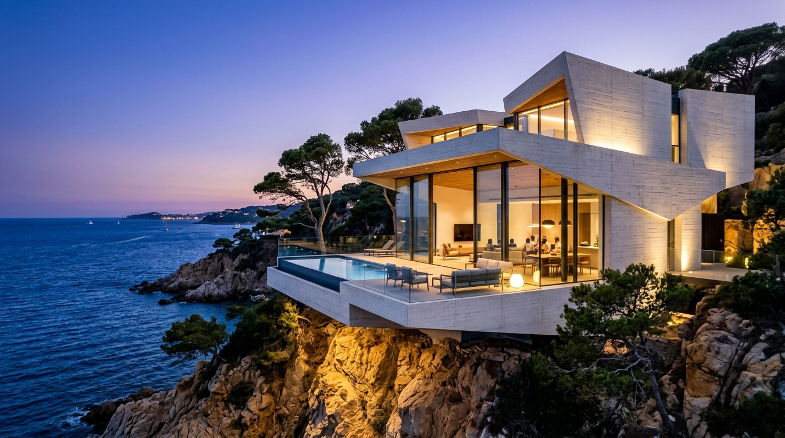
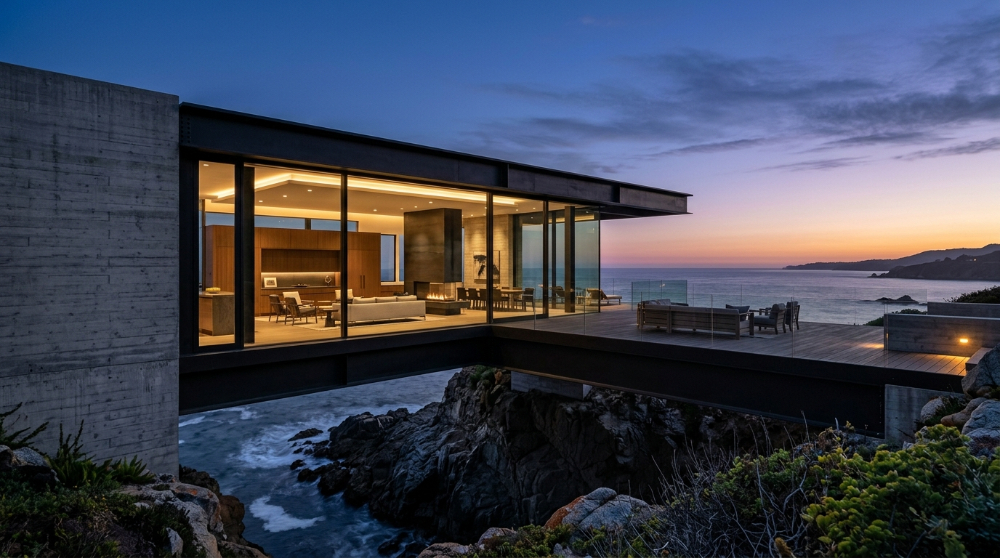
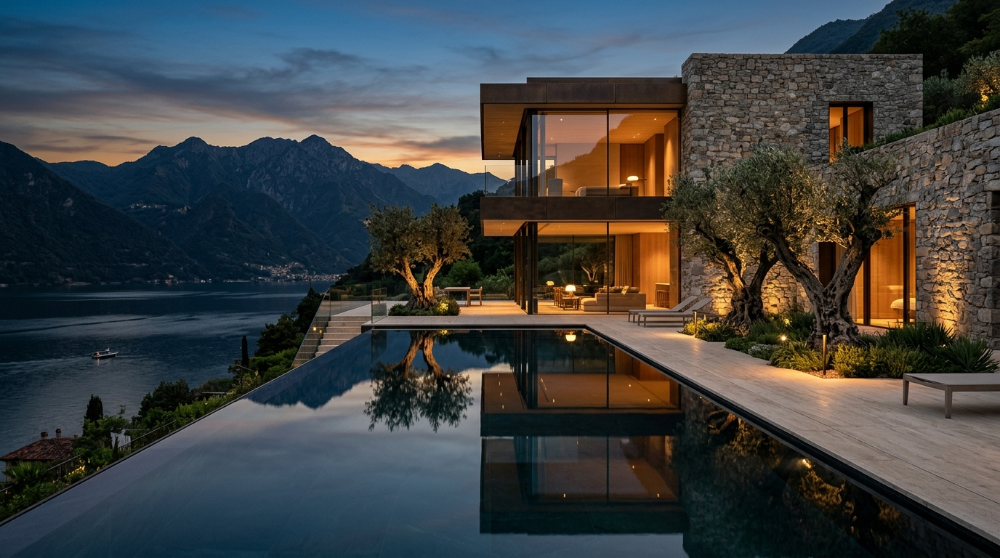
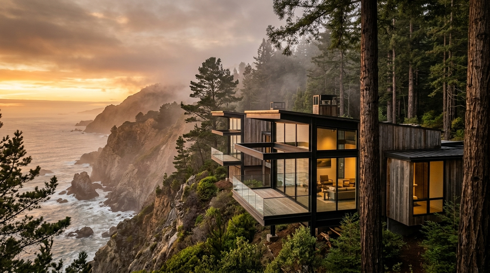
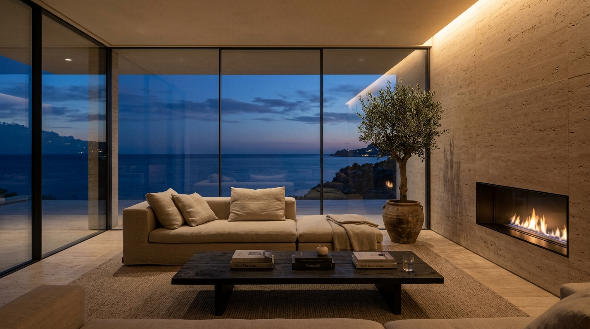
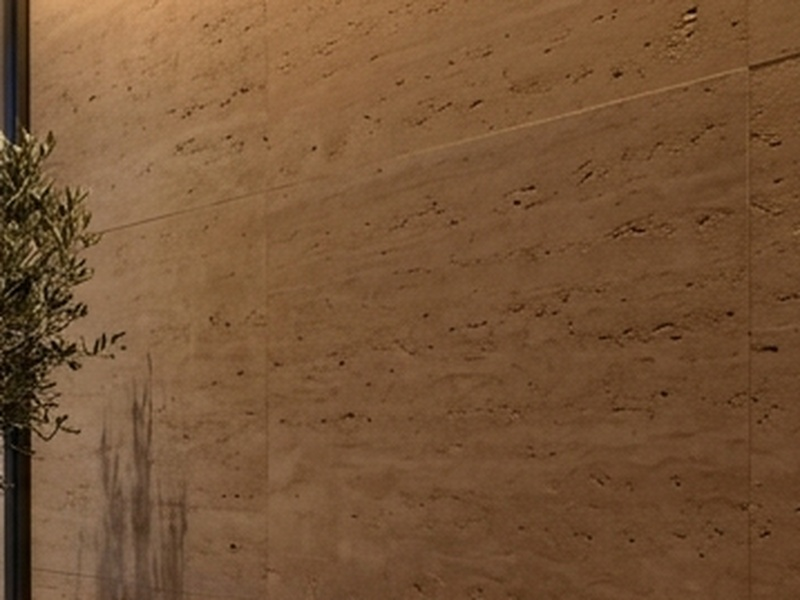
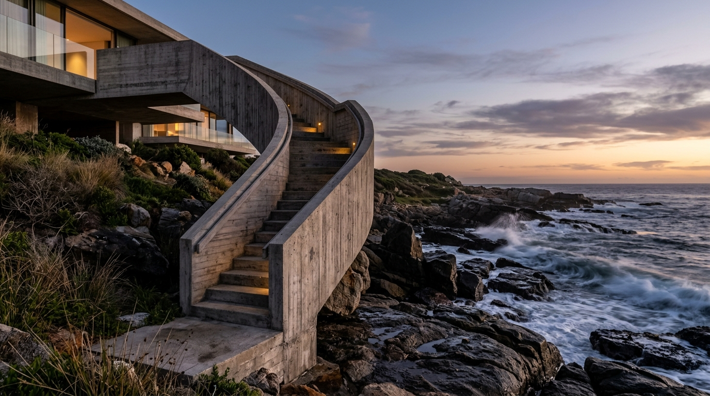
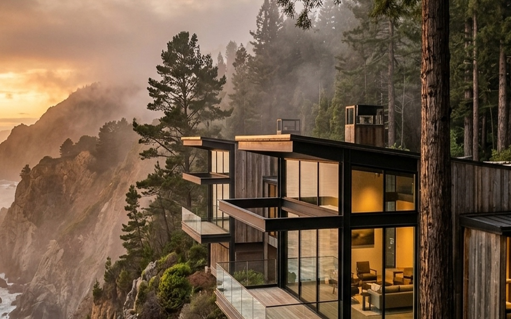

BUILT TO ENDURE.
Elevate Properties is an architectural studio designing site-responsive private residences across the Mediterranean and coastal California.
Architecture with
a point of view
We design timeless, site-responsive spaces where architecture, nature, and human life exist in perfect balance. From coastal retreats to contemporary residences, each project is a lasting expression of place, purpose, and craft.
FEATURED PROJECTS


18
YEARS OF PRACTICE
26
BUILT PROJECTS
7
COUNTRIES
FORM FOLLOWS FEELING.
We believe great spaces do more than look exceptional; they feel right. Our work is driven by a deep respect for topography, raw geology, and the ritual of residential living.

Travertine Navona, Recessed Hearth, & Twilight Horizon
THE MATERIAL ARCHIVE
Tactile specimens and geological selections from historical quarries.

PRACTICE DISCIPLINES
Rigor, reduction, and geological sensitivity.
SITE ARCHAEOLOGY
We listen before we sketch. Every topography carries rock formations and light angles that dictate the building's geometry.
MONOLITHIC WEIGHT
Defying gravity requires monumental mass. Deep cantilevers and cast-in-place concrete spine walls anchor structures against coastal winds.
CHIAROSCURO
Light has no power without shadow. We sculpt rooms around dusk, where indirect cove illumination meets the fading horizon.
TIME AS MATERIAL
We reject transient finishes that need synthetic upkeep. Honed stone, weathered bronze, and charred cedar grow more beautiful over decades.
THE JOURNAL
Essays on material poetics and nocturnal lighting design.

The Poetics of Concrete: Coastal Form
A technical exploration of board-formed concrete formulations engineered to withstand sea salt aerosol while developing a velvety mineral bloom over decades.

Designing with Darkness: Twilight Horizons
In conversation with master lighting designers on the restorative psychological power of low color temperature hearths and nocturnal sightlines.